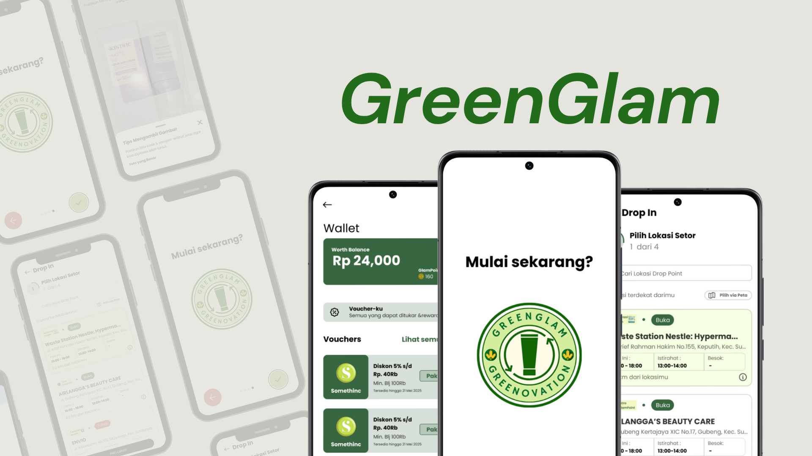

GreenGlam — Cosmetic Recycling & Voucher Exchange
A full UX research-to-UI design project for a cosmetic packaging recycling system — where users drop off empty cosmetic waste in exchange for discount vouchers, encouraging sustainable beauty habits through tangible rewards.

- Role
- UX Researcher & UI Designer
- Tools
- Figma
- Domain
- Sustainability & Beauty
- Output
- Hi-fi Prototype
Background
The beauty industry generates billions of units of cosmetic packaging waste annually — most of which ends up in landfills because recycling programs for cosmetic containers are nearly nonexistent at the consumer level. Users have no easy, rewarding way to dispose of their empty bottles, tubes, and palettes responsibly.
GreenGlam proposes a solution: a mobile app where users log their cosmetic waste drop-offs and earn discount vouchers redeemable at partner beauty stores. The design challenge was to make recycling feel less like a chore and more like a reward — which required deep UX research before a single screen was drawn.
- No accessible cosmetic recycling channels for consumers
- Low motivation to recycle without tangible incentive
- Users unaware of how or where to recycle beauty packaging
- Make drop-off submission simple and frictionless
- Drive engagement through voucher reward mechanics
- Build trust with transparent point tracking
UX Research
Research ran before any design decisions were made. The goal was to understand how real users currently handle cosmetic waste, what motivates them to act sustainably, and what barriers stand in the way of recycling behaviour.
Reviewed existing cosmetic recycling initiatives (L'Oréal, MAC Back-to-MAC, Kiehl's), sustainability behaviour literature, and the competitive landscape of eco-reward apps to identify gaps and benchmark expectations.
Conducted in-depth interviews with beauty consumers aged 18–35. Questions explored current disposal habits, environmental awareness, past experience with loyalty/reward apps, and what would make them change behaviour.
Interview findings were synthesised into an affinity map, grouping raw insights into themes: recycling awareness, motivation triggers, drop-off friction, reward expectations, and trust concerns about where packaging actually goes.
Built two primary personas from clustered interview data — a conscious beauty enthusiast who already seeks sustainable options but lacks accessible channels, and a deal-driven casual buyer motivated primarily by discounts who would recycle if the reward was compelling enough.
Mapped end-to-end journeys for both personas — from noticing an empty cosmetic product, deciding to recycle, finding a drop-off point, submitting the item, to redeeming their earned voucher. Pain points and opportunity moments were flagged at each stage.
Key Research Findings
Users were willing to recycle if the reward was immediate and usable — discount vouchers for their next beauty purchase scored higher than points or badges alone.
The biggest drop-off friction was not knowing where to go. Users wanted a map-based drop-off finder built directly into the recycling flow, not a separate step.
Users wanted confirmation that their items were actually recycled — not just collected. A recycling status tracker per submission was seen as essential for building trust.
Recycling needs to feel like part of the natural beauty routine, not a separate chore. Notifications timed to product usage cycles were flagged as a strong retention hook.
UI Design
Design decisions were directly driven by research findings. Each screen was built to reduce friction, increase reward visibility, and give users confidence that their recycling actually matters.
Defined the app's core navigation structure around four pillars: Recycle (submit drop-off), Vouchers (reward wallet), History (past submissions + status), and Explore (partner drop-off map). Kept the IA shallow — maximum two taps to any key action.
Sketched and then digitised low-fidelity wireframes in Figma for all key flows: onboarding, drop-off submission, voucher wallet, and recycling history. Validated layout hierarchy with peers before moving to visual design.
Built a design system around an earthy green and soft cream palette to reinforce the sustainability identity without sacrificing the premium feel expected by beauty consumers. Defined components: buttons, cards, badges, input fields, and the voucher reward card.
Assembled a fully interactive high-fidelity prototype in Figma covering all primary user flows — onboarding, recycling submission with item photo upload, real-time drop-off map, voucher earning + redemption, and recycling history with status tracking.
Ran usability testing sessions with 5 participants using the hi-fi prototype. Tested task completion rate for the core recycling and voucher redemption flows, noted friction points, and iterated on the design before finalising.
Key Screens
Photo upload of empty packaging, item categorisation (skincare / makeup / haircare), quantity input, and nearest drop-off point selection — all in a single guided flow.
Earned vouchers displayed by expiry date with one-tap copy for redemption code. Point balance and next reward milestone shown prominently at the top.
Interactive map of partner drop-off locations with distance, accepted packaging types, and operating hours — directly embedded into the submission flow.
Per-submission status tracker (submitted → received → processed → recycled) with a running total of CO₂ saved and packaging weight recycled to date.